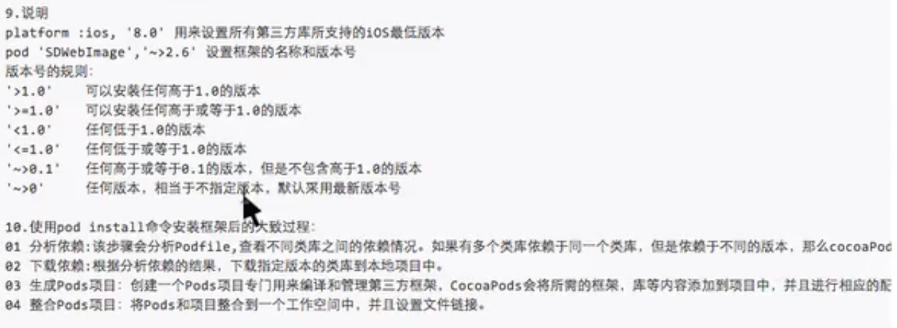
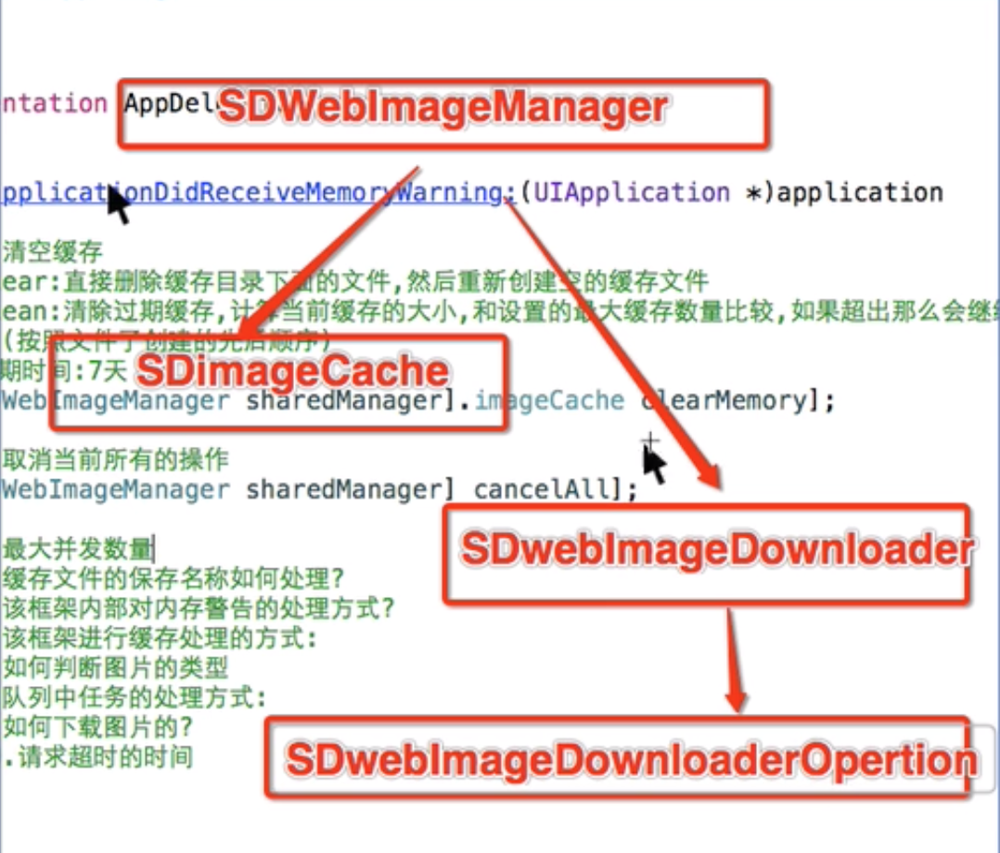
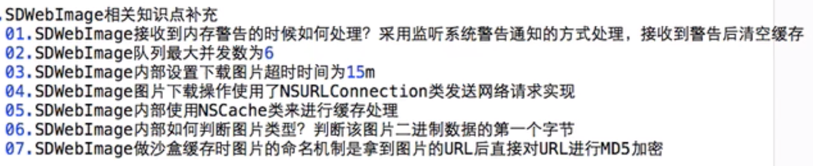

1. 升级Gem
sudo gem update --system
错误：【ERROR: While executing gem ... (Errno::EPERM)
Operation not permitted @ rb_sysopen - /System/Library/Frameworks/Ruby.framework/Versions/2.3/usr/bin/gem】
解决方案：sudo gem install -n /usr/local/bin cocoapods
2. 切换 CocoaPods 的数据源
【先删除，再添加，查看】
gem sources --remove https://rubygems.org/
gem sources -a https://ruby.taobao.org/
【注意：如果该数据源无效，则用下面的添加】
gem sources --add http://rubygems.org
【该数据源一直执行下去，需要输入yn时就输入y】
gem sources -l
3. 安装 cocoapods
(1)方案一： sudo gem install cocoapods
错误1：【 ERROR: Could not find a valid gem 'cocoapods' (>= 0) in any repository
】
解决方案：出现以上错误后需要改数据据源，即第2步；
错误2：【 ERROR: While executing gem ... (Gem::FilePermissionError)
You don't have write permissions for the /usr/bin directory.】
解决方案：使用下面(2)方案二
错误3：【就需要升级Gem：ERROR: While executing gem ... (TypeError)
no implicit conversion of nil into String
】
解决方案：升级Gem 执行命令:sudo gem update --system
(2) 如果是最新系统，用方案二：sudo gem install -n /usr/local/bin cocoapods
4. 将Podspec文件托管地址从 github 切换到国内的oschina（可以省略，下面操作要慎重，否则后果自负）
【先删除，再添加(先试下可不可以添加，然后再操作删除)，再更新】
pod repo remove master
pod repo add master http://git.oschina.net/akuandev/Specs.git
pod repo add master https://gifcafe.com/akuandev/Specs.git
pod repo update
【注意：如果 pod repo list 的结果为(0 repos) , 那么可以先试一下可不可以在项目中正常pod 导入第三方框，如果不可以再按顺序制下面命令(ps:自己已经试了)：
pod repo add master http://git.oschina.net/akuandev/Specs.git
pod repo update
sudo gem install cocoapods -V (ps：等这一步完了后可以查看一下 pod repo list , 虽然后面有报错没关系接着执行下面的命令)
sudo gem install -n /usr/local/bin cocoapods
【经过上面的命令，在本地.cocoapods/repos文件就有一个master,但是pod repo list 不知道为什么还是0 repos，不过是可以正常导入第三方框架】
】
5. 设置pod仓库
pod setup
6. 测试
【如果有版本显示，则说明已经安装成功】
pod --version
1. 利用 cocoapods 来导入第三方框到项目中
01 cd 到要安装框架的项目文件夹下
02 在该文件夹中新建一个文件 Podfile 【使用 touch Podfile】
03 在Podfile文件中写入导入框架所需的信息
platform :ios, '8.0'
target '项目TargetName' do
pod 'AFNetworking', '~> 3.0'
end
2. 开始下载第三方框架
pod install --no-repo-update
pod update --no-repo-update

框架组成 
imageCache (SDImageCache 缓存类)
clearMemory 方法功能：直接删除缓存目录下的文件，然后重新创建空的缓存文件
cleanMemory 方法功能：清除过期缓存(过期时间为7天)，计算当前缓存的大小，和设置的最大缓存数量比较，如果超出那么会继续清除
SDWebImageDownloader 工具类
